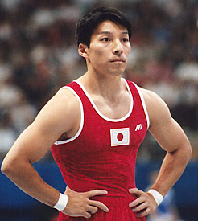

Shigeru Kurihara (JPN)
1998 World Cup R Bronze Medalist

Medal Total
World Cup: 1 Bronze
Competition Results
1992
JPN Championships: 8th AA
1993
China Cup: 6th AA
Chunichi Cup: 11th AA, 4th V, 8th R
Tokyo CUp: 5th R
1996
American Cup: 7th AA
JPN Championships: 8th AA
JPN Olympic Trials: 6th AA
Olympic Games: 10th Team
3-on-3 International: 16th Team
1997
All-Japan Workers Championships: 1st AA
JPN Championships: 3rd AA
NHK Cup: 10th AA
World Championships: 4th Team
1998
JPN Championships: 7th AA
Pacific Alliance Championships: 4th R, 6th PB
World Cup: 3rd R
This page was created on September
09, 2006.
© Gymn Forum